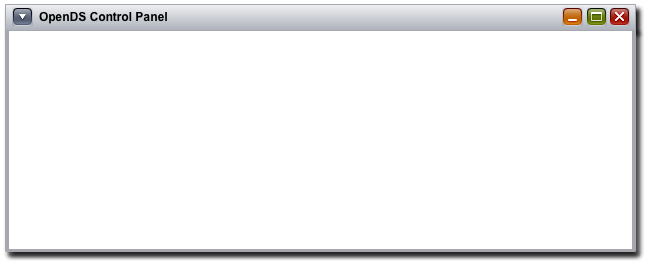

<div id="wnwindowbucket"></div>
<div id="wnwindowtitle"> - Windows Service Configuration</div>
<div id="wncontentarea">
  <div style="margin:15px 10px 0px 0px" class="help_sun4">This page indicates whether this OpenDS instance is configured to run as a Windows Service. To manage auto-start and other features, run the Windows Service Control Manager.</div>
  <table style="margin-top:10px" border="0" cellspacing="0" cellpadding="0" title="">
    <tr>
      <td nowrap="nowrap" align="left" valign="top"><div class="ConTblCl1Div_sun4">
          <label id="username" for="pwd" class="LblLev2Txt_sun4">Windows Service Integration:</label>
        </div></td>
      <td ><div class="ConTblCl2Div_sun4">Disabled&nbsp;&nbsp;&nbsp;
          <input type="button" class="Btn2_sun4" onclick="loadFile('progress.html')" onmousedown="if (this.disabled==0) this.className='Btn2Down_sun4'" onmouseup="if (this.disabled==0) this.className='Btn2_sun4'" onmouseover="if (this.disabled==0) this.className='Btn2Hov_sun4'"
       onmouseout="if (this.disabled==0) this.className='Btn2_sun4'" value="Enable"/>
        </div></td>
    </tr>
  </table>
</div>
<div id="wnbottombar"></div>
<div id="wnquitbutton">
  <input type="button" class="Btn1_sun4" onclick="closeSubWin()" onmousedown="if (this.disabled==0) this.className='Btn1Down_sun4'" onmouseup="if (this.disabled==0) this.className='Btn1_sun4'" onmouseover="if (this.disabled==0) this.className='Btn1Hov_sun4'"
       onmouseout="if (this.disabled==0) this.className='Btn1_sun4'" value="Close"/>
</div>
